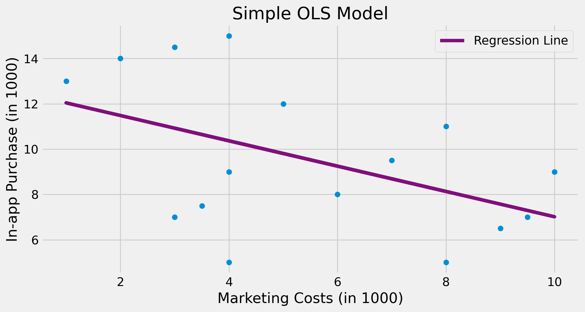
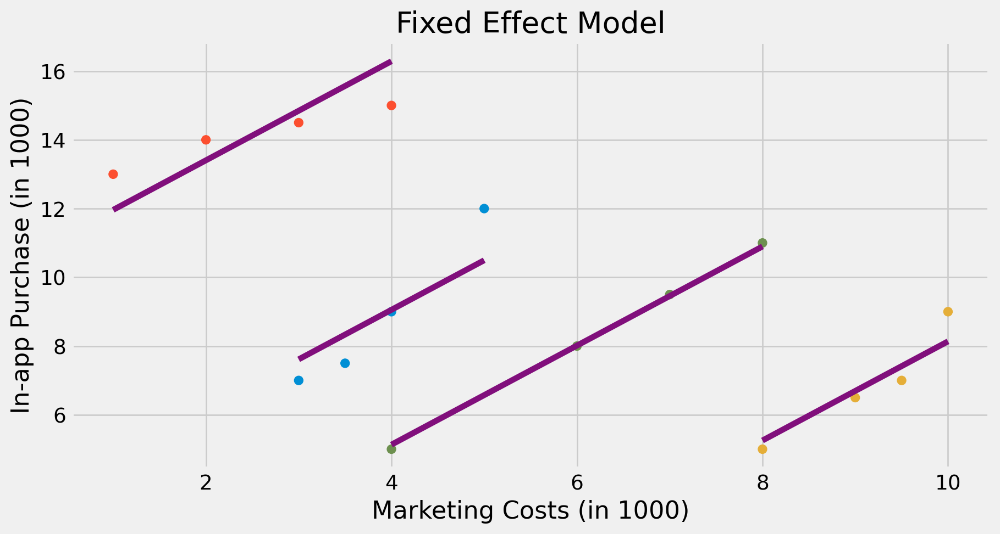

ECON526
University of British Columbia
Model \[ y_{it} = X_{it}'\beta + \overbrace{U_i'\gamma + \epsilon_{it}}^{\text{unobserved}} \]
Subtract individual averages \[ \begin{align*} y_{it} - \bar{y}_i & = (X_{it} - \bar{X}_i)'\beta + (\epsilon_{it} - \bar{\epsilon}_i) \\ \ddot{y}_{it} & = \ddot{X}_{it}' \beta + \ddot{\epsilon}_{it} \end{align*} \]
Equivalent to estimating with individual dummies \[ y_{it} = X_{it}'\beta + \alpha_i + \epsilon_{it} \]
\[ \def\Er{{\mathrm{E}}} \def\En{{\mathbb{E}_n}} \def\cov{{\mathrm{Cov}}} \def\var{{\mathrm{Var}}} \def\R{{\mathbb{R}}} \newcommand\norm[1]{\left\lVert#1\right\rVert} \def\rank{{\mathrm{rank}}} \newcommand{\inpr}{ \overset{p^*_{\scriptscriptstyle n}}{\longrightarrow}} \def\inprob{{\,{\buildrel p \over \rightarrow}\,}} \def\indist{\,{\buildrel d \over \rightarrow}\,} \DeclareMathOperator*{\plim}{plim} \]
1
toy_panel = pd.DataFrame({
"mkt_costs":[5,4,3.5,3, 10,9.5,9,8, 4,3,2,1, 8,7,6,4],
"purchase":[12,9,7.5,7, 9,7,6.5,5, 15,14.5,14,13, 11,9.5,8,5],
"city":["C0","C0","C0","C0", "C2","C2","C2","C2", "C1","C1","C1","C1", "C3","C3","C3","C3"]
})
m = smf.ols("purchase ~ mkt_costs", data=toy_panel).fit()
plt.scatter(toy_panel.mkt_costs, toy_panel.purchase)
plt.plot(toy_panel.mkt_costs, m.fittedvalues, c="C5", label="Regression Line")
plt.xlabel("Marketing Costs (in 1000)")
plt.ylabel("In-app Purchase (in 1000)")
plt.title("Simple OLS Model")
plt.legend();
1
fe = smf.ols("purchase ~ mkt_costs + C(city)", data=toy_panel).fit()
fe_toy = toy_panel.assign(y_hat = fe.fittedvalues)
plt.scatter(toy_panel.mkt_costs, toy_panel.purchase, c=toy_panel.city)
for city in fe_toy["city"].unique():
plot_df = fe_toy.query(f"city=='{city}'")
plt.plot(plot_df.mkt_costs, plot_df.y_hat, c="C5")
plt.title("Fixed Effect Model")
plt.xlabel("Marketing Costs (in 1000)")
plt.ylabel("In-app Purchase (in 1000)");
In fixed effect model \[ y_{it} - \bar{y}_i = (X_{it} - \bar{X}_i)'\beta + (\epsilon_{it} - \bar{\epsilon}_i) \] for \(\hat{\beta}^{FE} \inprob \beta\), need \(\Er[(X_{it} - \bar{X}_i)(\epsilon_{it} - \bar{\epsilon}_i)]=0\)
I.e. \(\Er[X_{it} \epsilon_{is}] = 0\) for all \(t, s\)
###
Estimation: OLS
Dep. var.: purchase, Fixed effects: city
Inference: CRV1
Observations: 16
| Coefficient | Estimate | Std. Error | t value | Pr(>|t|) | 2.5% | 97.5% |
|:--------------|-----------:|-------------:|----------:|-----------:|-------:|--------:|
| mkt_costs | 1.441 | 0.317 | 4.541 | 0.020 | 0.431 | 2.452 |
---
RMSE: 0.689 R2: 0.954 R2 Within: 0.832